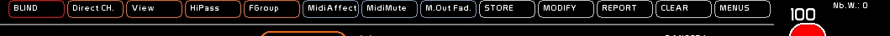
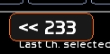

Table des matières
Grandes commandes
Elles se divisent en 2 grandes familles
- les commandes de manipulation les plus usuelles, qui se trouvent dans la barre du haut, et qui sont donc apparentes tout le temps:

- les commandes présentes dans [MENUS] :

Barre du haut
Commandes généralistes
La barre de menus en haut permet un accès rapide aux commandes les plus usuelles de WhiteCat:
Séquenciel:
- [BLIND]: de se mettre en mode Blind dans le séquenciel pour inspecter ou modifier des niveaux en aveugle. Raccourci: [CTRL-F11]
Faders:
- [DIRECT CH], le mode d'affectation d'un circuit vers un fader, en Direct Channel
- [VIEW], pour inspecter les niveaux issus des faders
- [HI-PASS], pour modifier un circuit issu d'un fader
- [F-GROUP], pour enregistrer un Fader Group
Midi:
- [MIDI-AFFECT]: affecter une commande midi solo ou X8 sans passer par le menu CFG MIDI
- [MIDI-MUTE]: muter l'entrée Midi pour recaller vos potentiomètres
- [M.Out Faders] pour enclencher un refresh des valeurs renvoyées en midi par les faders et leurs accéléromètres
Les commandes principales de manipulation:

Ces commandes de manipulations s'enclenchent en mode ON, et attendent que l'on choisisse une destination, un conteneur, une cible à l'action qu'elles vont mener. L' action se fait en clickant la cible qu'elles vont affecter.
- [STORE] est une fonction d'enregistrement. Généralement, il prend les circuits allumés par le séquentiel ou depuis le BLIND. Il ne prend pas en compte les intensités et circuits issus des masters. Raccourci: [F1]
- [MODIFY] prend en compte les circuits sélectionnés uniquement.
MODIFY permet donc de modifier certains circuits contenus dans le fader ou la mémoire sélectionnée. Raccourci: [F2]
- [REPORT] permet d'enregistrer la valeur issue du séquenciel, ainsi que la valeur issue des Masters. [REPORT] ne fonctionne pas en mode BLIND, et se comporte de manière différente selon vers quelle fonction il reporte les niveaux. Raccourci: [F3]
- [CLEAR] permet de nettoyer les données contenues dans l'objet choisi. Raccourci: [F4]
Menus
- [MENUS] permet d'appeler les grandes fenêtres et certaines commandes de manipulation et d'édition, qui ne sont pas dans la barre de menu haute. Raccourci: [Click droit] sauf quand la fenêtre LightPlot est active
Les commandes d'édition accessibles depuis MENUS
Manipulation d'urgence sur les circuits:
- [Freeze] permet de geler-dégeler les circuits sélectionnés
- [Exclude] de sortir de l'action du Grand Master une sélection de circuits
Edition des textes
- [NAME] permet de changer le type d'entrée au clavier.
Par défaut, l'entrée clavier est en numérique: des chiffres sont tapés, et les autres signes sont utilisés comme raccourcis clavier:

Quand [NAME] est actif, un liseret orange apparait: les lettres tapées ne sont plus considérées comme des raccourcis clavier, mais comme une entrée texte. Celà permet d'attribuer un nom à: un dock, une mémoire, un Grid, un banger, etc… Ce nom fait 24 caractères maximum. Raccourci: [F5]

Edition des temps
- [TIME] permet d'accéder au chronomètre et permet d'affecter des temps à la volée dans le séquenciel, dans les docks des masters ou tout autre contenu comprenant un temps. Raccourci [F6].
En savoir plus sur [TIME]: voir Time